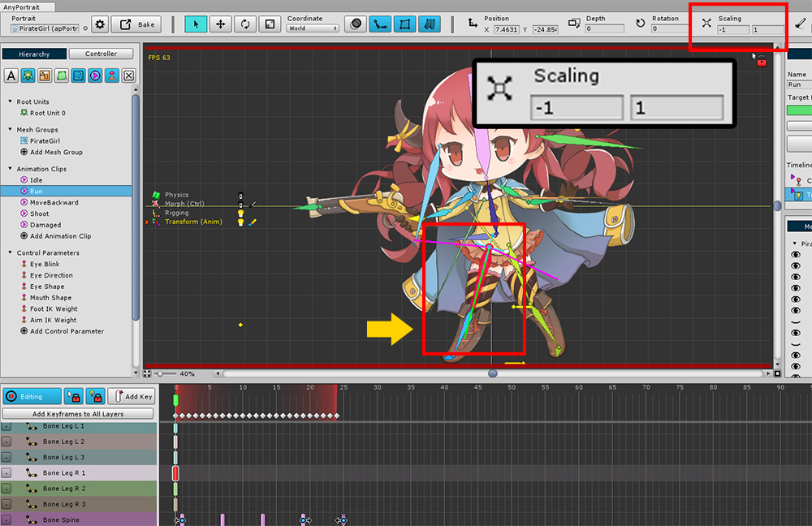

AnyPortrait > マニュアル > メッシュの両面レンダリング
メッシュの両面レンダリング
1.0.4
ほとんどの3Dレンダリングエンジンは、デフォルトで前面のみをレンダリングします。
同様に、Unityエンジンはデフォルトでバックサイドをレンダリングしません。これはAnyPortraitでも同じです。
しかし、いつか、メッシュを前面と背面の両方でレンダリングする必要があるかもしれません。
このページでは、両面レンダリングが必要な例と解決策について説明します。

7番目のデモシーンには、海賊の女の子のキャラクターがあります。
この文字の「Run」アニメーションでは、右足の骨のXスケール値が-1であることがわかります。
骨は逆転しているので、メッシュは自然にX軸上で逆に見えるはずです。

しかし、ゲームシーンをチェックインすると、キャラクターが「Run」アニメーションに従って動作するモーションを取ると、右足が消えます。
これは、メッシュがX軸に反転され、背面が前面ではなくレンダリングされるためです。
したがって、この場合、右足は常に前面と背面の両方にレンダリングする必要があります。

これは、メッシュの両側を常にレンダリングする方法です。
(1) メッシュグループを選択します。
(2) 「Setting」タブを選択します。
(3) 対象メッシュを選択します。
(4) メッシュ設定で「2-Sides」をチェックします。

これで正常にレンダリングされていることがわかります。
両面レンダリングが必要な場合と注意事項
基本的に、「Morph」、「Rigging」、「Physics」のモディファイアでメッシュの一部を反転させる場合、両面レンダリングが必要です。
しかし、「Transform」を使ってメッシュのサイズを直接逆にすると、両面レンダリングを行う必要はありません。
両面レンダリングの設定は、頂点を2度レンダリングするため、少し遅くなることがあります。
カスタマイズされたシェーダが「Cull Off」に設定されている場合、合計4回レンダリングできます。
この場合、アルファ計算が正しく実行されないことがあります。
参考
「リギングが適用されたメッシュ」の大きさが反転した場合でも、「両面メッシュ」に設定していない状態で正常にレンダリングすることができるオプションがv1.2.5に追加されました。
すべての場合に適用されるオプションはありませんので、下のページの説明とこのページに紹介された「両面メッシュ機能」を一緒にご覧ください。
- リギングが適用されたメッシュの反転サイズ